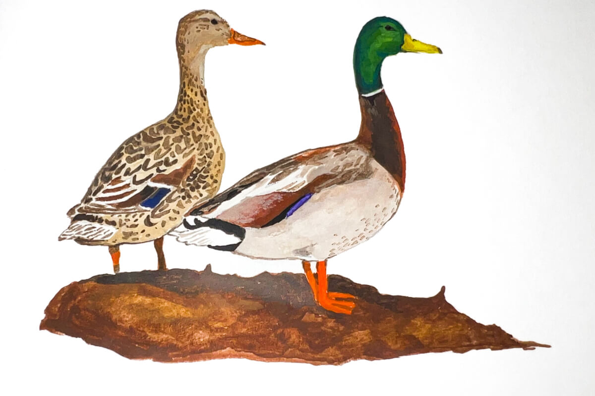
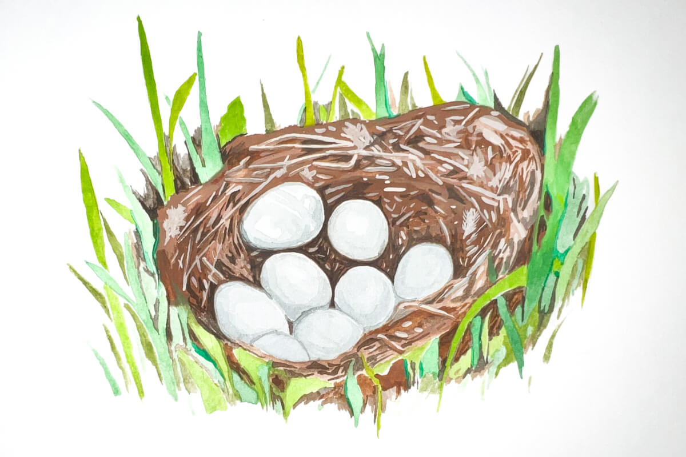
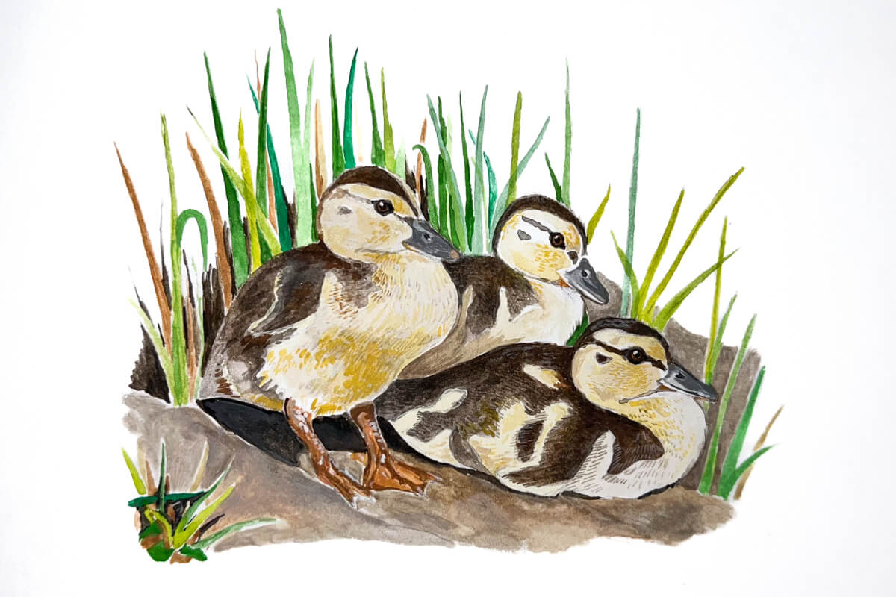
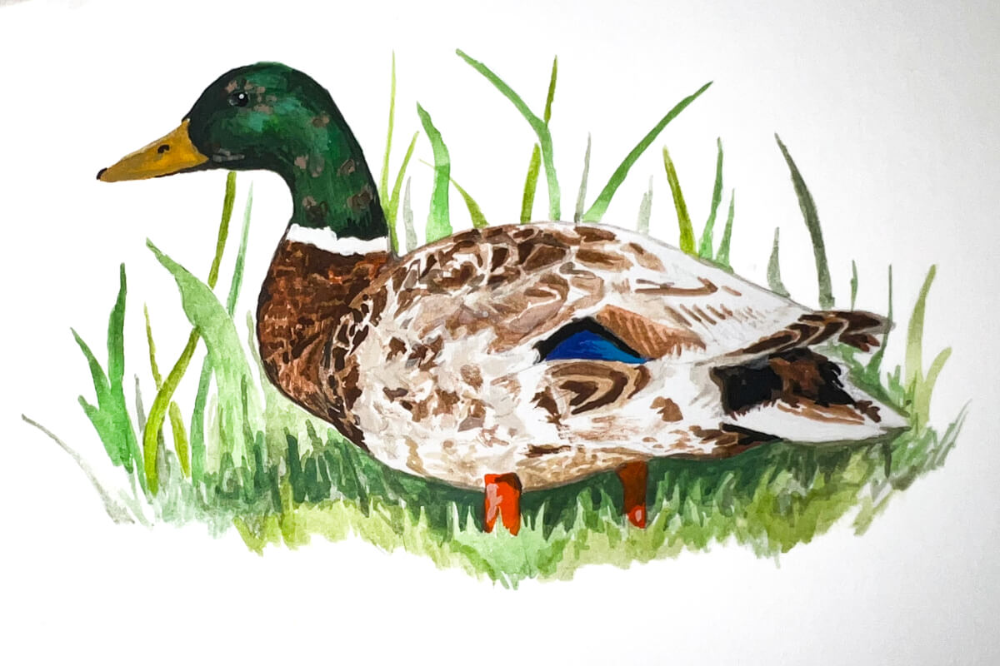
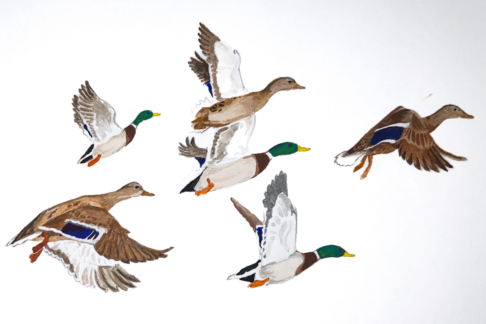
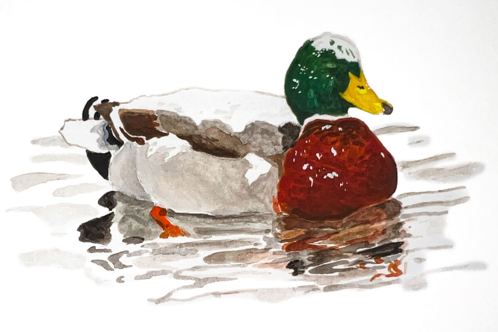
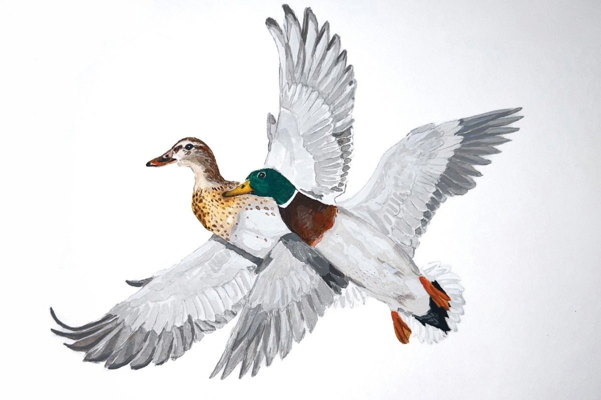

The Annual Cycle of the Mallard Duck
Follow the journal from breeding to seasons migration for a better understanding of the activities and energy requirements in different phases of a duck's annual cycle.
Inspired by: Migration Movie Trailer

Overview
In the space of one year a duck experiences the full spectrum of seasonal changes that usher in opportunities and challenges. Follow the annual life cycle diagram from breeding to wintering for a better understanding of the activities and energy requirements in different phases of a duck's annual cycle.
- Common Name: Mallard Duck
- Scientific Name: Anas platyrhynchos
- Type: Bird
- Diet: Omnivore
- Group Name: Sord (in flight)
- Life Span (Wild): 5-10 years
- Life Span (Captivity): Up to 10 years
- Size: 20-26 inches
- Weight: 2-3 pounds
Pairing Information

Mallards, like most North American ducks, do not mate for life. Rather, they form new pair bonds annually, which typically last for 6-8 months.
Mallards begin courting and selecting mates during fall and early winter, typically before most other species of ducks. Adult males pair earlier, as they have more experience performing courtship displays and are more dominant to younger males. From the perspective of a male duck, pairing early is especially important, because there are more males than females in the population. If a male mallard doesn't find a mate early, they are at risk of not finding one at all.
Early pairing is beneficial to female mallards because the protection and dominance shown by her mate means better access to high quality feeding sites, protection from harassment by unpaired males, and vigilance against predators. Ultimately this may also lead to earlier migration and nesting in the spring, which increases the odds of successfully producing more ducks.
Breeding and Brood Rearing
The greatest concentrations of breeding mallards are found in the Prairie Pothole Region of the U.S. and Canada, including South Dakota, North Dakota, Montana, Manitoba, Saskatchewan, and Alberta. Mallards also breed in large numbers across the Boreal Forest of western Canada, diverse landscapes of eastern Canada, and tundra and river deltas of Alaska. Breeding mallards are commonly found within the Great Lakes states, Northeastern U.S., Central Valley of California, and other local landscapes across that providesuitable nesting and brood-rearing habitat.

Nests are typically built in upland vegetation where the female's brown, mottled plumage conceals her from predators. The nest is made from grasses or other plants and lined with fluffy down feathers in a bowl-shaped indentation in the ground. The female typically lays 8-13 whitish to greenish eggs at a rate of 1 per day. The pair bond weakens as the female progresses through incubation. Females perform all incubation and brood-rearing activities. Males typically leave the female mid-incubation but remain nearby seeking additional breeding opportunities with other females that may have lost a nest or brood to predators.

Incubation lasts 26-30 days, after which the eggs hatch in relative synchrony. Being precocial,
ducklings can walk, swim, and eat on their own as soon as they depart the nest. Less than 24 hours after
the last egg has hatched, the female leads her brood to a nearby wetland where they begin feeding on
invertebrates on or near the water surface. Females may provide protection from inclement weather while
ducklings are small, but soon enough they are able to survive independent of female care. The female's
role becomes one related to warning about predators or leading the ducklings to new areas with abundant
food. As they age, they soon begin feeding in the tip-up fashion common among puddle ducks. The female
stays with the ducklings for about 45 to 60 days, at which time the ducklings are able to fly and escape
predators on their own.
During the brood-rearing phase, ducklings require large amounts of protein-rich foods, mostly aquatic
invertebrates, to fuel the rapid growth of body tissue, muscle, and feathers.

Once breeding is complete, both male and female mallards must complete prebasic molt, the process by
which they replace their entire plumage with a new set of feathers. During the prebasic molt, mallards
replace all their flight feathers, making them flightless for 30-45 days. Lacking the ability to fly,
this is a time of great risk, which is why mallards seek out wetlands with reliable water and dense
vegetation in which they can hide from predators. Mallards often fly long distances after breeding to
traditional “molting wetlands,” which sometimes can support tens of thousands of flightless ducks during
late summer.
For males, prebasic molt is a time of dramatic change as they replace their ornate breeding plumage with
drab body plumage. For a short time, male mallards lose the iconic green head feathers, causing them to
look like a female mallard except for some masculine features, like a yellow, black-tipped bill.
Juvenile male mallards (ducklings) go through juvenile molt, losing their downy appearance and gaining
feathers that look more like those of female mallards, and then another molt that may last into fall
migration where they obtain the familiar green head plumage. Females also replace their entire breeding
season plumage, but the change in color pattern is not as drastic for them.
Males retain their drab, basic plumage for only a short period of time, as they enter their
pre-alternate molt during fall while preparing to migrate southward. The prealternate molt is the
process through which they obtain their ornate breeding plumage, which they use to help attract a female
mate and form a pair bond as early as October or November.
Molt is energetically expensive. During prebasic molt, mallards need proteins to rebuild feathers, but
they also require energy-rich seeds and other foods to begin putting on fat that will eventually fuel
their southward migration.
Migration
Fall migration

Mallards typically begin migration when they begin to lose access to food, such as when it becomes buried in snow or wetlands begin to freeze. In areas where the weather does not get cold enough to cause mallards to seek a warmer climate, they may migrate a shorter distance or not at all.
Winter migration

During the winter, mallards mainly split their time between resting and feeding, seeking out foods rich in carbohydrates, such as seeds and grains. Females go through a prealternate molt during winter, whereby they grow feathers associated with breeding. This requires addition of protein-rich invertebrates to their diet to support feather growth. Pairs continue to strengthen their bonds during winter, as males try to prevent their mate from being taken by an unpaired male. Pair bonds remain intact through spring migration and arrival on their breeding grounds.
Spring migration

As days gets longer and temperatures warm during late winter and early spring, mallards begin migrating from their southern wintering areas into the northern breeding grounds of Canada and northern United States. Birds that arrive earliest on the breeding grounds choose the preferred nesting sites, and earlier arrival also provides more time for renesting if early nest attempts are destroyed by predators. Like fall migration, the timing and pace of spring migration may be altered by weather conditions. For example, cold weather that keeps northern wetlands frozen into spring will delay migration, while unusually warm weather may cause an earlier or faster migration.
Female mallards typically return to nest in areas where they have prior experience, either where they were hatched or where they successfully raised a brood in previous years. This is known as “philopatry,” and it is believed to improve survival and breeding success because the ducks are already familiar with the habitats of that location.
Summary
| Fall Migration (Southward) | Spring Migration (Northward) | |
|---|---|---|
| Timing | Triggers include falling temperatures, freezing wetlands, and decreasing daylight, prompting birds to leave Canada and Alaska. | Returns to northern breeding grounds typically begin in January and February, driven more by increasing daylight (photoperiod) than immediate weather, extending into April. |
| Behaviour | Known as dabbling ducks, they often move in large, nocturnal flocks to feed on carbohydrates in agricultural fields and wetlands. | Pairs form during winter, and females often return to the same breeding site where they were born, accompanied by the male. |
| Distance | While some migrate short distances, others may travel over 875 miles in less than a month. | na |
| Location | They use all four major North American flyways, with significant numbers using the Mississippi and Central Flyways. | na |
| Cold Tolerance | Mallards are hardy and will delay migration until severe weather freezes their habitat, allowing them to shorten their journey. |
|---|---|
| Adaptability | Many populations have become permanent residents in urban or warm areas, bypassing migration entirely. |
| Nocturnal Movement | Migration often occurs at night, with massive changes in local populations happening overnight. |